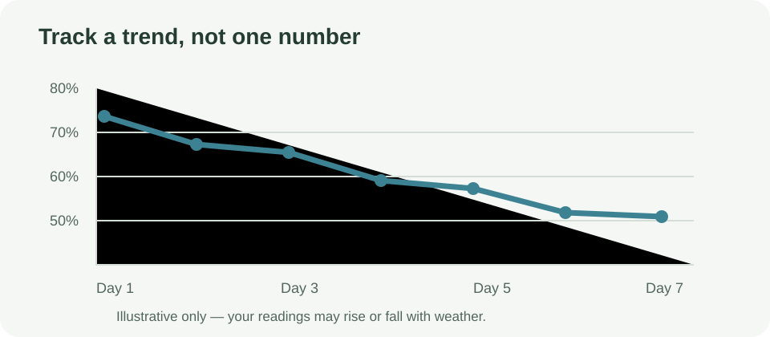
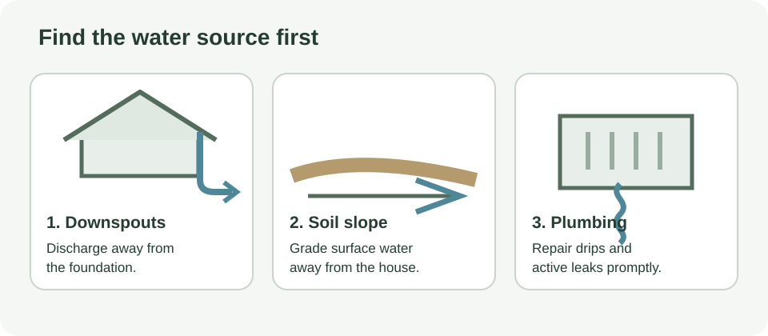
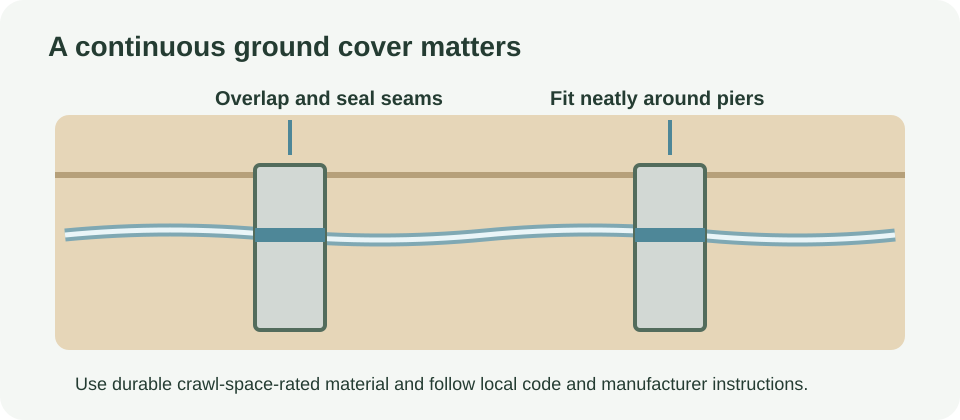
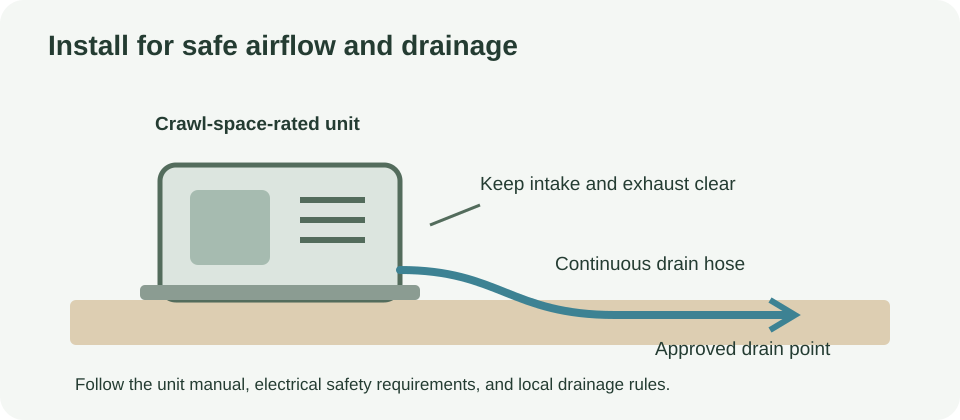
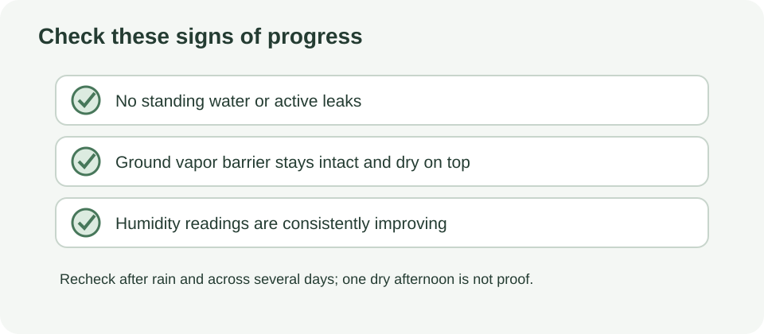
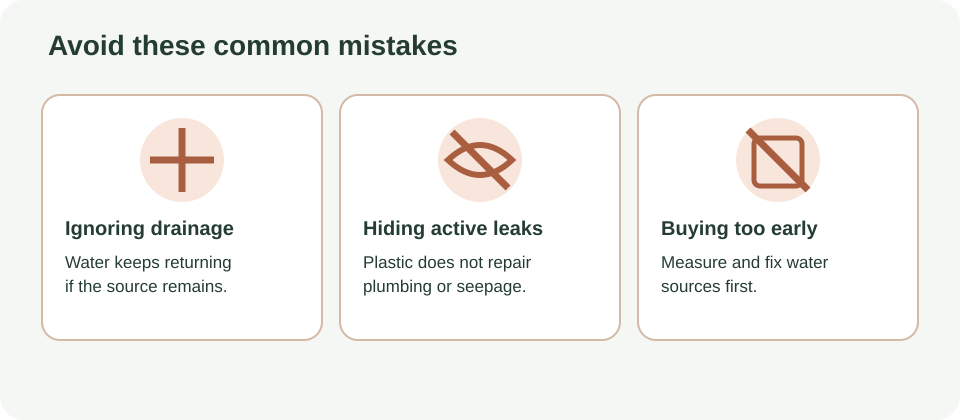
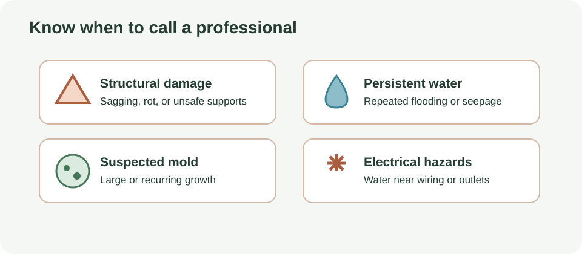

HOME PROJECTS · MOISTURE CONTROL
How to Fix a Damp Crawl Space: Find the Water First, Then Control the Humidity
Cold floors, a musty smell and damp air coming from below can make you suspect the crawl space. A dehumidifier might help—but buying one before you find the moisture source can mean paying to dry air while water keeps coming in.
Quick answer: a dehumidifier controls humidity; it does not stop liquid water. First check drainage, gutters, plumbing and standing water. Then cover exposed soil with a properly sealed vapor barrier and measure the humidity again. Add a crawl-space-rated dehumidifier only if readings stay high.

Your quick plan
- Time: one weekend for inspection and straightforward fixes; drying and monitoring take longer.
- Cost: about $20 for a basic digital hygrometer to $1,000+ depending on drainage, barrier work and equipment.
- Best for: homeowners noticing a musty smell, condensation or small mold spots in an accessible crawl space.
- Goal: keep relative humidity around or below 55–60%, while correcting the source of moisture.
Safety first: do not enter a flooded, structurally unsafe or poorly ventilated space if you suspect a hazard. Avoid disturbing visible mold. Use a qualified professional for extensive mold, sagging joists or recurring standing water.
Quick win: measure before you buy (10 minutes to set up)

Buy an inexpensive digital hygrometer that displays relative humidity. Place it in a representative part of the crawl space, away from direct drips and vents, and leave it there for 24 hours before recording the first reading. Check it at similar times over the following days; a single reading is only a snapshot.
If readings stay above 60% for days, moisture control deserves attention because prolonged dampness can support mold growth. The meter does not diagnose mold or identify the source. Use it to check whether changes are helping.
Step 1: Find the water before treating the air

Inspect what you can safely see, ideally during or just after rain as well as in dry weather. Follow moisture back toward its source rather than starting with a machine.
- Gutters and downspouts: check for clogs, overflow and outlets that discharge beside the foundation. Extend discharge away from the house in line with local requirements and the site layout.
- Ground slope: soil and hard surfaces should generally direct rainwater away from the foundation, not toward it. Do not dig around foundations or alter grading in a way that sends water to a neighbor.
- Plumbing: look for active drips, damp joints and wet areas beneath bathrooms, kitchens or water lines. Repair leaks before installing a vapor barrier.
- Standing water after rain: recurring puddles may point to grading, drainage, groundwater or foundation-entry problems. A dehumidifier is not a fix for pooled water.
- Wet or sagging insulation: do not simply cover it up. Identify the moisture source and assess whether the insulation needs safe removal or replacement.
- Humid air and condensation: cold pipes and framing can collect moisture when humid air reaches them. Ventilation choices depend on climate and crawl-space design; do not assume opening vents always dries the space.
Fix straightforward drainage and leak issues first. If water keeps returning, you cannot identify its route, or repairs involve foundation drainage, ask a qualified crawl-space or drainage professional to assess the site.
Step 2: Cover exposed soil with a vapor barrier

Once liquid-water problems have been addressed, a ground vapor barrier can reduce water vapor rising from bare soil. It is not a substitute for drainage, and it will not stop a plumbing leak or standing water.
- Choose polyethylene at least 6 mil thick. Thicker or reinforced material is more durable where people need to crawl or service equipment.
- Prepare the ground. Remove sharp debris that could puncture the sheet, without disturbing suspect mold or hazardous material.
- Cover the ground continuously. Overlap seams by roughly 6–12 inches (follow the product and local guidance) and seal them with tape or sealant designed for the membrane.
- Seal around piers and penetrations. Cut carefully and seal around pipes and supports so the cover remains as continuous as practical.
- Extend it up the walls. Run the membrane at least 6 inches up foundation walls and secure and seal it appropriately. Check local termite-management requirements and get professional advice if they affect wall details.
Installation can be awkward in a low or confined space. If the ground is wet, the access is unsafe, or the work requires sealing a large area, consider a qualified installer.
Step 3: Add a dehumidifier only if humidity stays high

After water sources are corrected and the ground is covered, keep checking the hygrometer. If relative humidity still regularly exceeds about 60%, a suitable dehumidifier may be part of the solution. It should complement—not replace—water management.
- Check the temperature rating. Choose a unit designed for crawl spaces and the temperatures it will actually experience. Capacity and operation can change in cooler conditions, so read the maker's specifications for your space.
- Plan drainage before purchase. Look for a practical gravity-drain route or a condensate pump if gravity drainage is not possible. Follow the manual for hose routing and pump lift limits. Do not rely on a bucket you must remember to empty.
- Start around 50–55%. Set the humidistat in that range and monitor actual readings. Avoid trying to force the space extremely dry; the goal is stable, sensible humidity.
- Match the unit to the space. A small, mildly damp area may need only a regular dehumidifier if it is rated for the environment and can drain safely. Large or very damp crawl spaces and basements may need a commercial-grade unit, proper drainage and professional sizing.
- Leave service access. Follow clearance and installation instructions, keep the filter and drain accessible, and use an electrical supply suitable for the location. Have electrical work done by a qualified person when needed.
Where Argendon fits
Argendon makes commercial-grade dehumidifiers for crawl spaces and basements and is associated with the team behind AlorAir. These units may be worth comparing for a large or persistently damp space, but a brand name alone does not tell you whether a specific unit is suitable. Check the exact model's specifications for the crawl-space area, operating temperature, condensate drainage, installation requirements, warranty and service support. Do not choose by headline capacity alone.
This page contains an affiliate link. If you buy through it, we may earn a commission at no extra cost to you.
Compare Argendon crawl-space dehumidifiers →
What not to buy yet
- Do not buy a dehumidifier before checking for leaks. Otherwise you may run it continuously while the source remains.
- Do not buy a much larger unit just to be safe. Match capacity and temperature range to the actual conditions, and check the maker's sizing guidance.
- Avoid small bucket-only units for a crawl space. They may be unsuitable for the conditions and require frequent emptying. A reliable drainage plan matters.
- Do not buy a vapor barrier as a fix for standing water. Water management comes first.
How to tell whether it is working

Keep the hygrometer in place and compare readings over several days, including after rain. Signs that moisture control is improving include:
- Relative humidity stays generally in the 45–60% range rather than remaining above 60% for days.
- The musty smell gradually fades over a week or two, provided its source has been addressed.
- You see no new condensation on cold pipes or other surfaces.
- You observe no new visible mold growth. Do not disturb or attempt to clean extensive mold yourself.
These are useful checks, not guarantees. Smell can linger, and a hygrometer cannot confirm that framing is dry or that mold is absent. If readings remain high despite the fixes, investigate further rather than continually lowering the set point.
Common mistakes

- Skipping the vapor barrier: bare soil can continue adding moisture even after obvious leaks are fixed.
- Ignoring drainage: a dehumidifier cannot remove the cause of repeated puddles.
- Setting humidity too low: start around 50–55% and use the readings to guide adjustments.
- Never checking the hygrometer: use it after rain and periodically during normal operation, not just on installation day.
- Covering wet insulation or mold: find the moisture source and arrange appropriate assessment before concealing damage.
When to call a professional

Get professional help if there is extensive visible mold, sagging or damaged joists, standing water that keeps returning, suspected foundation damage, or a moisture source you cannot identify. A professional can assess drainage, building conditions and equipment sizing. This guide is general information, not a structural, mold-remediation or health assessment.
Frequently Asked Questions
Will a dehumidifier fix a damp crawl space?
It can lower moisture in the air, but it does not stop plumbing leaks, rainwater or groundwater. Address liquid-water sources first, then measure humidity to decide whether a dehumidifier is still needed.
What humidity should a crawl space be?
Use about 50–55% as a practical dehumidifier setting and aim for readings generally around 45–60%. Sustained readings above 60% call for investigating moisture sources and conditions rather than relying on one reading.
Does a crawl space need a vapor barrier?
A polyethylene ground cover helps limit water vapor rising from exposed soil. Use at least 6-mil material, overlap and seal seams, and extend and seal it up walls and around piers. It will not stop standing water or active leaks.
When should I call a crawl-space professional?
Ask a qualified professional to assess extensive visible mold, sagging or damaged joists, or standing water that repeatedly returns. Do not enter an unsafe or flooded crawl space.
Sources and last review
Last reviewed: October 10, 2026. Installation details and moisture guidance vary with climate, local codes and crawl-space design. Follow product instructions and local requirements.